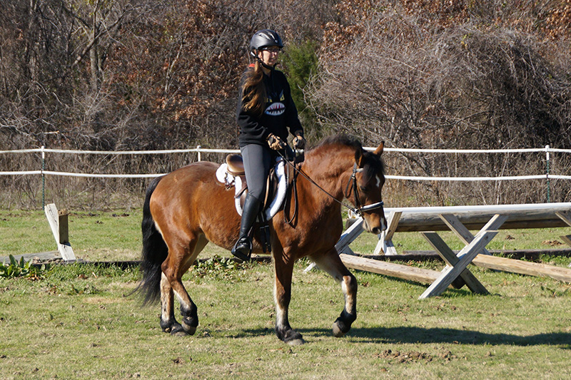
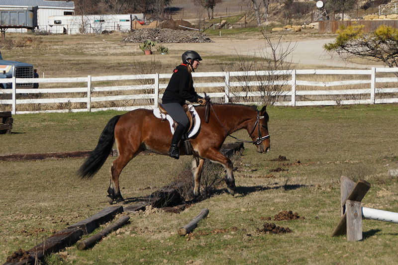

12/27/15 A lesson at home
Topper's been lunging nicely over cavaletti and
willing to step or hop over anything that I've asked
him to under saddle. He's cantering when I ask, but
doesn't have the right lead much of the time. This time
we never did get it under saddle. He's smart and
tries, so we'll get there.
Pictures are good to show what my trainer meant when she said I needed to keep my hands together more.
A lot of this happening as he learns to carry his head and not go hollow.

Sometimes the trot gets short and I have to keep him going, but that's improved since I first got him. Here's a tip of the nose as another
resistance. I try not to go to the reins too much, but steering with my legs isn't happening so much yet.
Nice stretch and reach over the cavaletti. He picked this up much faster than most of the horses
I've brought along.
His regular trot can have a lot of knee and hock action, so this just encourages that.
It's taken a couple of months to get myself more still and I still tip on him more than I should. He's smaller than
I'm used to and takes more core strength to stay steady and in the middle to help his balance.
I love the bounce and all feet off the ground at once. It'd be easier to keep my position if I were in the dressage saddle, though.
We do a lot of bending and flexing work. He's good off the leg if he's not distracted and listening. He's really good at getting gates,
even if he's a bit excited.
His canter is very smooth and easy to ride.
At home I typically have to work a bit to keep him going. Away from home he's better at keeping the canter himself.
If I go to the bit he tends to get shorter in the neck than we want. It's a balancing act, but once he's listening better to my legs it should
get better.
Explaining jumping with a rider and trying to canter away.
Here we landed in a trot. He's still working it out.
I have to be sure and stay centered to help his balance. He's so willing.
Ears forward and pulling me to the jump. Hopefully he keeps this enthusiasm as they get higher.
We're both learning how to work together.

So far so good with ditches.